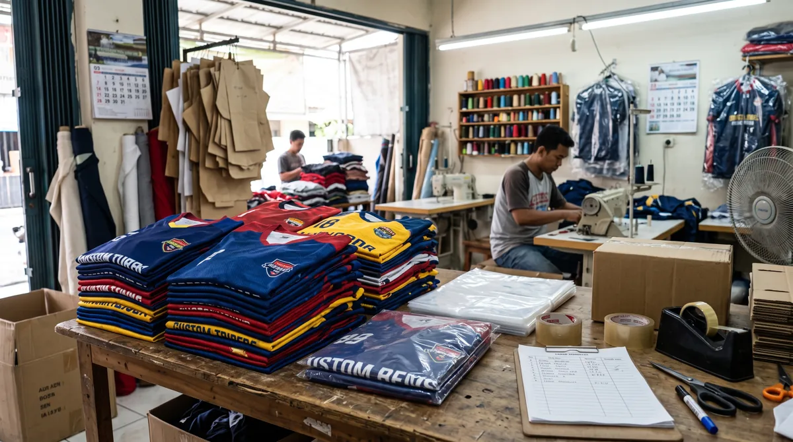

Pesanan tim lebih lancar jika desain, ukuran, jumlah, dan jadwal disiapkan sebelum meminta penawaran. Artikel ini membahas aspek yang perlu diperiksa agar keputusan Anda lebih tepat, baik untuk seragam komunitas, tim olahraga, sekolah, maupun kebutuhan acara.
Dalam memilih layanan jersey printing, sebaiknya pertimbangkan bukan hanya tampilan desain, tetapi juga fungsi bahan, ketepatan ukuran, dan kesiapan data pesanan. Untuk gambaran menyeluruh, baca panduan printing jersey Bandung.
Data yang perlu dikumpulkan
Catat cabang olahraga, model jersey, bahan yang diinginkan, jumlah per ukuran, desain, nama dan nomor pemain, serta alamat dan tenggat penerimaan.
Hal yang perlu dikonfirmasi ke vendor
Tanyakan proses revisi, metode cetak, spesifikasi bahan, detail biaya, jadwal produksi, pemeriksaan kualitas, dan prosedur jika terdapat ketidaksesuaian.

Buat persetujuan tertulis
Simpan satu versi final untuk desain dan data personalisasi. Pastikan penanggung jawab tim menyetujui semuanya sebelum vendor mulai produksi agar perubahan mendadak dapat diminimalkan.
Langkah praktis sebelum menentukan pilihan
Gunakan panduan ini sebagai titik awal, lalu sesuaikan dengan aktivitas, anggaran, kebutuhan desain, dan jumlah anggota tim. Jika terdapat spesifikasi khusus, komunikasikan sejak awal agar solusi yang ditawarkan tidak hanya terlihat menarik di gambar tetapi juga sesuai saat digunakan.
Untuk kebutuhan produksi di Bandung, pelajari juga panduan printing jersey Bandung yang menjelaskan pilihan bahan, teknik sublimasi, serta alur pemesanan. Anda juga dapat mengenal layanan jersey printing dari Zipzip dan mendiskusikan detail proyek secara langsung.
Artikel terkait yang dapat membantu
- Cara Menentukan Ukuran Jersey Custom untuk Tim agar Tidak Salah
- Tips Desain Jersey Tim: Warna, Logo, Nama, dan Nomor Punggung
- Jasa Pembuatan Jersey Bandung
Masih ada pertanyaan tentang spesifikasi atau kebutuhan tim? Hubungi Zipzip untuk membahas opsi yang sesuai dengan desain dan jadwal Anda.